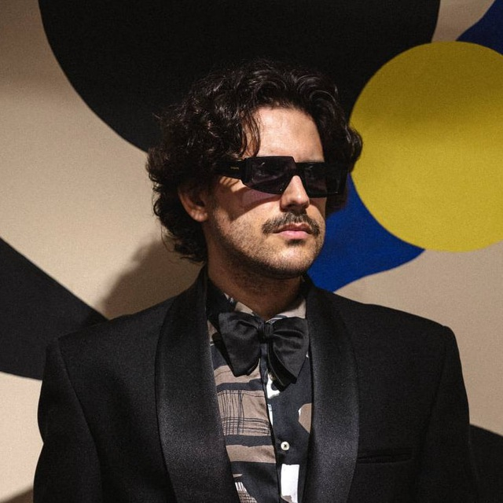

ИИ-агенты работают вместе под твоим началом: разработчик, дизайнер, аналитик — уже настроены и готовы.
Дай каждому сотруднику целую команду. Поставил приложение — у человека уже есть разработчик, аналитик, ассистент. Внедрение — это установка, а не проект на год.
Всё включено!
Кажется, нужны месяцы интеграций, обучение и отдельный бюджет. Поэтому до дела так и не доходит — откладывается на «потом».
подключить ИИ к каждой системе
научить людей писать промпты
куда уходят данные компании?
проект на квартал, легко отложить
Групповой чат, где агенты сами координируются, ведут доску задач и общую базу знаний проекта.
Ты — руководитель в разговоре.
Каждый сотрудник получает готовую ИИ-команду с настроенными ролями. Они координируются в чате, ведут задачи и знания проекта.
Один стандарт рабочего места на каждом компьютере.
Храни идеи и мысли
Заметки, идеи, решения, контекст проектов — агент держит это в голове и достаёт нужное по первому вопросу.
Организуй работу
Задачи, дедлайны, прогресс — агент держит план в голове и напоминает, что горит, вместо тебя.
Делегируй общение
Чаты и почта, ответы, планирование дня — агент читает поток сообщений и берёт рутину на себя.
Логика, языки, культура
Го, шахматы, языки, психология — агент подбирает наставника под задачу и держит связь между занятиями.
Здоровье, семья, быт
Дневник самочувствия, забота о близких, порядок в бытовых делах — не медсовет, а внимание к тому, что происходит вне работы.
Веди идею до результата
Юнит-экономика, питчи, рабочий прототип — агент считает цифры и сам собирает MVP: сайт, бота, приложение.
Команда получает агентов, которые знают код проекта и ускоряют доставку.
Маркетолог, копирайтер, аналитик рынка — функция, готовая к запуску.
Агенты ведут задачи, отчёты и координацию — меньше ручной операционки.
Один стандарт рабочего места на каждом компьютере компании.
Локальные модели на своей машине — без интернета и без чужих серверов.
Любой облачный провайдер на выбор — не заперты в одном поставщике моделей.
Локальные embeddings, sqlite-vec. Каждое сообщение сверяется с базой знаний автоматически — без лишних токенов.
Управляй агентами, задачами и базой знаний программно — не только через UI.
Переиспользуемые prompt-шаблоны, self-service — правишь через тот же API.
Read-only доступ к логам приложения через API — диагностика без похода в поддержку.
Никаких интеграций и месяцев проекта. Поставил приложение сотруднику — всё началось.
Разработчик, дизайнер, аналитик, исследователь — настроенные специалисты с первого дня.
Всё работает локально на машине сотрудника. Вы решаете, к чему агенты имеют доступ.
За провайдеров платите напрямую — Kelly не берёт markup. Прозрачно на масштабе.

Я строю Kelly с помощью самой Kelly — прямо сейчас команда моих агентов работает над этим лендингом, пока я пишу это. У меня в Kelly крутится больше десятка проектов: от разработки самого приложения до партий в го, здоровья, английского, стихов и блога, который я веду. Я не открываю ChatGPT, когда нужно подумать или сделать — я захожу в свой офис, где меня уже ждёт команда: у каждого агента своё имя и характер, и я всегда знаю, к кому из них идти с чем.
Скачай Kelly и собери свою ИИ-команду за пару минут. Бесплатно до 2 проектов, без карты.
Поставьте Kelly сотрудникам и дайте команде ИИ-офис уже сегодня. Без интеграций и долгих внедрений.